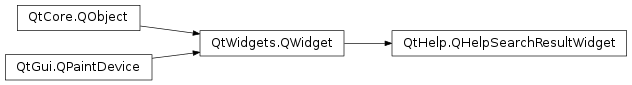

QHelpSearchResultWidget¶
Detailed Description¶
ThePySide2.QtHelp.QHelpSearchResultWidgetclass provides a text browser to display search results.
-
PySide2.QtHelp.QHelpSearchResultWidget.linkAt(point)¶ Parameters: point – PySide2.QtCore.QPointReturn type: PySide2.QtCore.QUrlReturns a reference of the URL that the item at
pointowns, or an empty URL if no item exists at that point.
-
PySide2.QtHelp.QHelpSearchResultWidget.requestShowLink(url)¶ Parameters: url – PySide2.QtCore.QUrl
© 2018 The Qt Company Ltd. Documentation contributions included herein are the copyrights of their respective owners. The documentation provided herein is licensed under the terms of the GNU Free Documentation License version 1.3 as published by the Free Software Foundation. Qt and respective logos are trademarks of The Qt Company Ltd. in Finland and/or other countries worldwide. All other trademarks are property of their respective owners.